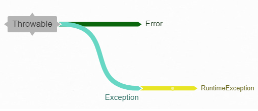
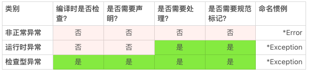
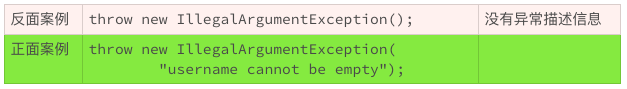
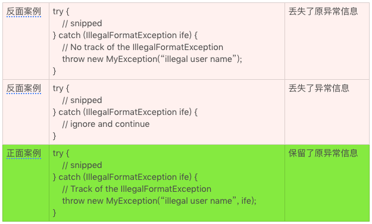

- 00 开篇词 你写的每一行代码，都是你的名片.md.html
- 01 从条件运算符说起，反思什么是好代码.md.html
- 02 把错误关在笼子里的五道关卡.md.html
- 03 优秀程序员的六个关键特质.md.html
- 04 代码规范的价值：复盘苹果公司的GoToFail漏洞.md.html
- 05 经验总结：如何给你的代码起好名字？.md.html
- 06 代码整理的关键逻辑和最佳案例.md.html
- 07 写好注释，真的是小菜一碟吗？.md.html
- 08 写好声明的“八项纪律”.md.html
- 09 怎么用好Java注解？.md.html
- 10 异常处理都有哪些陷阱？.md.html
- 11 组织好代码段，让人对它“一见钟情”.md.html
- 12丨组织好代码文件，要有“用户思维”.md.html
- 13 接口规范，是协作的合约.md.html
- 14 怎么写好用户指南？.md.html
- 15 编写规范代码的检查清单.md.html
- 16丨代码“规范”篇用户答疑.md.html
- 17 为什么需要经济的代码？.md.html
- 18丨思考框架：什么样的代码才是高效的代码？.md.html
- 19 怎么避免过度设计？.md.html
- 20 简单和直观，是永恒的解决方案.md.html
- 21 怎么设计一个简单又直观的接口？.md.html
- 22丨高效率，从超越线程同步开始！.md.html
- 23 怎么减少内存使用，减轻内存管理负担？.md.html
- 24 黑白灰，理解延迟分配的两面性.md.html
- 25 使用有序的代码，调动异步的事件.md.html
- 26 有哪些招惹麻烦的性能陷阱？.md.html
- 27 怎么编写可持续发展的代码？.md.html
- 28 怎么尽量“不写”代码？.md.html
- 29 编写经济代码的检查清单.md.html
- 30丨“代码经济篇”答疑汇总.md.html
- 31 为什么安全的代码这么重要？.md.html
- 32 如何评估代码的安全缺陷？.md.html
- 33 整数的运算有哪些安全威胁？.md.html
- 34 数组和集合，可变量的安全陷阱.md.html
- 35 怎么处理敏感信息？.md.html
- 36 继承有什么安全缺陷？.md.html
- 37 边界，信任的分水岭.md.html
- 38 对象序列化的危害有多大？.md.html
- 39 怎么控制好代码的权力？.md.html
- 40 规范，代码长治久安的基础.md.html
- 41 预案，代码的主动风险管理.md.html
- 42 纵深，代码安全的深度防御.md.html
- 43 编写安全代码的最佳实践清单.md.html
- 44 “代码安全篇”答疑汇总.md.html
- Q&A加餐丨关于代码质量，你关心的那些事儿.md.html
- 结束语 如何成为一个编程好手？.md.html
- 捐赠
10 异常处理都有哪些陷阱？
上一讲中我们聊了聊怎么用好Java注解，今天我们谈谈怎么处理异常。
处理好异常状况是掌握一门编程语言的基础，也是我们编程离不开的基本功。相信你对异常处理的机制已经很熟悉了。异常处理便捷、灵活、好用。但是，越好用的东西，我们越容易忽视它的缺陷。异常处理就有很多我们容易忽视的陷阱。今天，我们来聊聊这些问题，以及该怎么处理这些问题。
异常就是非正常
异常状况，就是不正常的状况。
异常状况的处理会让代码的效率变低。一个流畅的业务，它实现代码的执行路径，理想的状况就是没有任何异常状况发生。否则，业务执行的效率就会大打折扣。既然这样，我们就不应该使用异常机制来处理正常的状况。
这一点不难理解。可是，由于一门语言无法理解什么样的状况是正常状况，什么样的状况又是异常状况，也就无法限制异常机制使用的具体场景。所以作为程序员，我们需要自己解决好这个问题，不要滥用了异常机制。
比如说，很多API的设计有检查参数有效性的方法。如果参数通过检验，就没有异常抛出，否则就会抛出异常。在使用这个方法的代码时，我们需要检查有没有抛出异常来确认参数是否有效。
/**
* Check if the user name is a registered name.
*
* @throws IllegalArgumentException if the user name is invalid or
* not registered.
*/
void checkUserName(String userName) {
// snipped
}
这是一个糟糕的设计！
在这个例子中，如果userName字符串不符合规范，这是一个异常状况； 如果userName不是一个注册用户，这通常是一个正常状况。 在正常状况下使用异常处理，无疑会降低系统的效率，以及编码的效率。
所以正常的状况和异常的状况一定要分开、分清，不能混用。
/**
* Check if the user name is a registered name.
*
* @return true if the userName is a registered name.
* @throws IllegalArgumentException if the user name is invalid
*/
boolean isRegisteredUser(String userName) {
// snipped
}
分清异常的类别
我们上面讲了异常的一些基本概念，现在我们来讲讲异常的类别。在Java语言里，异常状况分为三类。
非正常异常（Error）：这类异常的命名以Error结尾，比如OutOfMemoryError，NoSuchMethodError。这类异常，编译器编译时不检查，应用程序不需要处理，接口不需要声明，接口规范也不需要纪录；
运行时异常（RuntimeException）：这类异常的命名通常以Exception结尾，比如IllegalArgumentException，NullPointerException。这类异常，编译器编译时不检查，接口不需要声明，但是应用程序可能需要处理，因此接口规范需要记录清楚；
非运行时异常：除了运行时异常之外的其他的正常异常都是非运行时异常，比如InterruptedException，GeneralSecurityException。和运行时异常一样，命名通常以Exception结尾。这类异常，编译器编译时会检查异常是否已经处理或者可以抛出，接口需要声明，应用程序需要处理，接口规范需要记录清楚。
通常我们说的异常，指的是运行时异常和非运行时异常。对于非正常异常，我们通常使用“错误”这个词汇而不是“异常”来表示。 由于非正常异常不需要特别处理，使用“错误”这个词汇，并不会导致使用方面的误导。
非运行时异常还有一个别名，叫作检查型异常（CheckedException）。对应地，运行时异常的别名是非检查型异常（UncheckedException）。 为了便于识别，我们通常使用检查型异常指代非运行时异常，使用运行时异常指代非检查型异常。
- 我们来看看两个例子，感受下运行时异常和检查型异常不同的处理方式。
下面这个例子中，IllegalArgumentException是运行时异常。虽然方法的声明中没有出现IllegalArgumentException，但是在方法的规范中，需要使用记录什么情况下抛出该异常。只有这样，方法的调用者才能知道什么时候异常会抛出，该采取什么样的处理办法。
/**
* Check if the user name is a registered name.
*
* @return true if the userName is a registered name.
* @throws IllegalArgumentException if the user name is invalid
*/
boolean isRegisteredUser(String userName) {
// snipped
}
下面这个例子中，CloneNotSupportedException是检查型异常。这样的异常，一定要出现在对应方法的声明中。
/**
* Returns a clone if the implementation is cloneable.
*
* @return a clone if the implementation is cloneable.
*
* @throws CloneNotSupportedException if this is called on an
* implementation that does not support {@code Cloneable}.
*/
public Object clone() throws CloneNotSupportedException {
// snipped
}
这三类异常的处理，可以用下表来总结。

标记清楚抛出异常
应用程序需要处理异常（CheckedException和RuntimeException），就需要我们在方法的规范描述文档中清楚地标记异常。没有标记的异常，应用程序没有办法通过文档了解哪些异常需要处理、什么状况下会抛出异常以及该怎么处理这些异常。
对于检查型异常，编译器或者IDE会友好地提醒使用合适的声明。我们一般不会遗漏检查型异常的声明。既然声明不会遗漏，异常的标记也通常不容易遗漏。 比如上面clone()方法的例子，CloneNotSupportedException已经在方法定义部分声明了。在方法规范描述部分，只要不遗漏这个异常的描述就好了。
然而，对于运行时异常，我们就没有这么幸运了。目前我们使用的编译器或者IDE，还没有提醒运行时异常遗漏的功能。由于没有工具的帮助，我们就很难发现运行时异常，这就很容易导致代码效率降低，错误增多。
我举个例子，在上面的检查用户名的例子中，如果我们不在方法的规范描述中记录抛出的运行时异常，该方法的使用立即就会遇到问题。
/**
* Check if the user name is a registered name.
*
* @return true if the userName is a registered name.
*/
boolean isRegisteredUser(String userName) {
// snipped
}
其中最常见的问题包括：
如果参数userName是一个无效引用（null），会发生什么状况，该怎么处理？
如果参数userName是一个空字符串（“”），会发生什么状况，该怎么处理？
如果参数userName不是一个规范的用户名，会发生什么状况，该怎么处理？
每一个问题，都会降低使用者的效率，让使用者陷入难以摆脱的困扰。
如果代码的层次结构再多一层，这个问题就会更加严重：
/**
* Check if the {@code userName} is an authenticated user.
*
* @return true if the {@code userName} is an authenticated user.
*/
boolean isAuthenticatedUser(String userName, String password) {
// WRONG, should catch or describe the thrown exception.
if (isRegisteredUser(userName)) {
// snipped
} else {
// snipped
}
// snipped
}
如果一个方法既没有异常的声明，又没有异常的规范描述，调用者一般不会进行异常处理，也不在规范描述中加入抛出异常的描述。 这样的层次结构，只要稍微多个一两层，运行时异常虽然在代码和规范描述层面消失得无影无踪，但它并没有真正消失，依然会在运行时准时出现。
即使调用者拥有源代码，可以阅读源代码，也不容易意识到有运行时异常需要谨慎对待。代码的阅读者也不会有足够的精力和动力去深挖所有的层次，来确认有没有运行时异常。
由于编译器或者IDE并不能给我们太多的帮助，我们更需要谨慎、严格地处理好运行时异常。具体该怎么做呢？
对于所有的可能抛出运行时异常，都要有清晰的描述，一个也不要错过；
查看所有的调用方法的规范描述，确认抛出的异常要么已经处理，要么已经规范描述。
如果我们都遵循了这两条运行时异常处理的办法，我们只需要查看一层代码的异常就可以了，这样无论是编码还是阅读代码，都会轻松不少。
处理好捕获异常
要想处理好异常，我们需要了解异常机制的基本原理。 我们一起回顾一下Java异常的四个要素：
异常类名（IllegalArgumentException， FileNotFoundException）
异常描述（“Invalid file path”）
异常堆栈（at sun.security.ssl.InputRecord.read(InputRecord.java:504)）
异常转换（Caused by: javax.net.ssl.SSLException: Unrecognized SSL message, plaintext connection?）
这四个要素满足了三个现实的异常处理问题：
出了什么错？
什么地方出了错？
为什么会出错？
其中，异常类名解决了“出了什么错”的问题；异常描述解决了“为什么会出错”的问题；异常堆栈解决了“什么地方出了错”的问题；而异常转换记录了不同场景对这三个问题的不同理解和不同处理。
其中JVM自动帮我们处理异常堆栈，我们需要特别关注的就只有三点了。
1.对于异常类名，我们要准确地选择异常类。
Exception类是一个包罗万象的超级异常类，如果我们使用Exception作为声明和抛出的异常，就不方便用户精准定位，从而解读和判断“出了什么错”。 类似的超级异常类还有RuntimeException、IOException等。 除非是超级的接口，否则我们应该尽量减少超级异常类的使用，而是选择那些意义明确、覆盖面小的异常类，比如FileNotFoundException。
2.对于异常描述，我们要清晰地描述异常信息。
虽然Java异常允许使用没有具体异常信息的异常，但是这种使用却容易丢失用户对于“为什么会出错”这个问题更精准的解读。 所以我不推荐使用没有描述信息的异常。
- 3.对于异常转换，我们要恰当地转换异常场景。
随着应用场景的转换，我们还需要转换异常的类型和描述。 比如，SQLException这种涉及具体实现细节的异常类就不太适合直接抛给最终的用户应用。 用户关心的是商业的逻辑，并不是实现的细节，这就需要我们随着使用场景调整异常。如果一股脑儿地把所有的异常抛到底，业务逻辑就会很混乱，用户体验也不好。
但是随着场景调整异常也不是没有代价的。这是一个妥协的选择，会带来一些负面的情况。
第一个情况，就是需要编写转换的代码，这当然没有异常一抛到底方便。
第二个情况，就是信息的冗余。如果转换场景有两三层，异常打印出来的堆栈信息就会很长，而最有用的信息其实只有最原始的异常。
第三个情况，就是信息的丢失。有些信息的丢失是有意的，比如对敏感信息的过滤而丢掉的异常信息。有些信息的丢失是无意的过失。信息的丢失很难让我们排查出异常问题，于是错误的源头被硬生生地隐匿了起来。所以，除非有明确的需求，我们要尽量保留所有的异常信息以及转换场景。
- 由于这些负面情况的存在，我们就更要谨慎地使用异常场景转换，特别是要认真权衡信息丢失的问题。
小结
今天我给你讲了处理异常的一些情况，它的小陷阱很多。单就编写规范的代码来说，我们要记住三条准则：
不要使用异常机制处理正常业务逻辑；
异常的使用要符合具体的场景；
具体的异常要在接口规范中声明和标记清楚。
你还知道哪些异常处理的陷阱呢？欢迎你分享在留言区，我们一起来学习。
一起来动手
下面的这段Java代码，它的异常处理有没有违反我们上面讨论的原则？你能够改进下面的代码吗？
欢迎你把优化的代码公布在讨论区，我们一起来讨论，看哪些地方我们可以做得更好。也欢迎你把今天的内容分享给协作的小伙伴，和他一起进步。
import java.util.HashMap;
import java.util.Map;
class Solution {
/**
* Given an array of integers, return indices of the two numbers
* such that they add up to a specific target.
*/
public int[] twoSum(int[] nums, int target) {
Map<Integer, Integer> map = new HashMap<>();
for (int i = 0; i < nums.length; i++) {
int complement = target - nums[i];
if (map.containsKey(complement)) {
return new int[] { map.get(complement), i };
}
map.put(nums[i], i);
}
throw new IllegalArgumentException("No two sum solution");
}
}
© 2019 - 2023 Liangliang Lee. Powered by gin and hexo-theme-book.